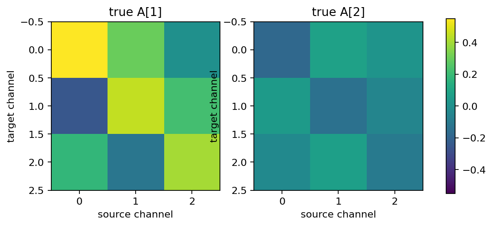
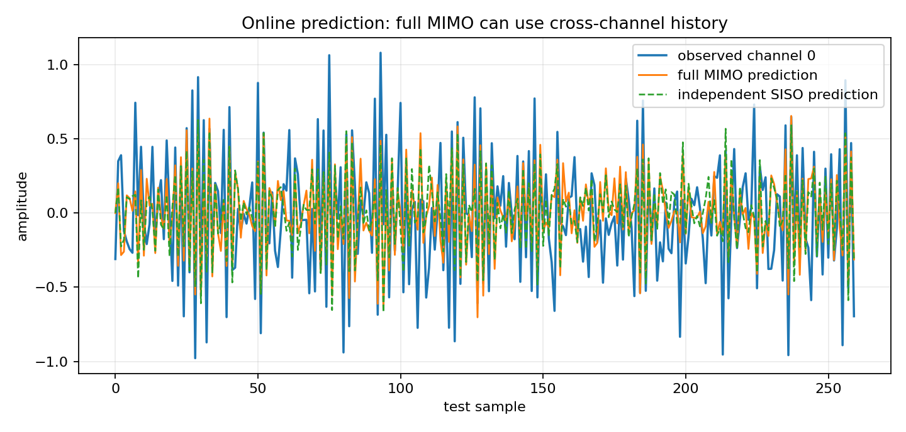
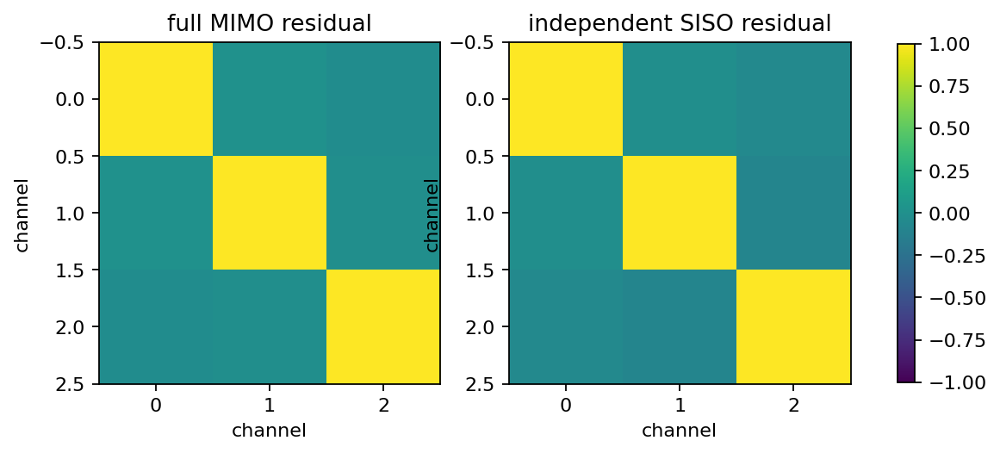
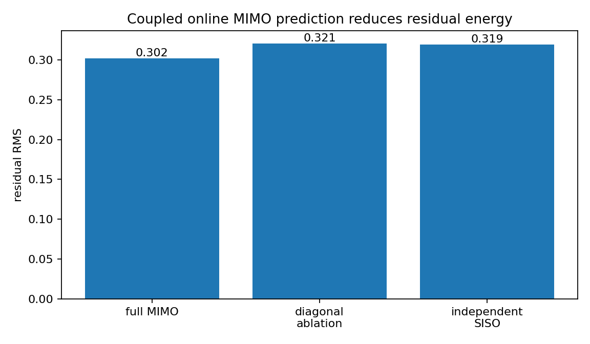

Online coupled MIMO prediction versus independent SISO¶
Tutorial goal
Show that full online MIMO lattice prediction captures cross-channel dynamics that independent SISO predictors miss.
Note
New to the terminology? See the lattice DSP concept map and the causality/data-use guide for how online, offline, block, and MIMO examples should be read.
Context¶
The diagonal-MIMO tutorial is a reduction test: when reflection matrices are diagonal, MIMO equals independent SISO. This tutorial tests the complementary case. A synthetic vector AR process contains off-diagonal lag matrices, so previous samples from one channel help predict another channel. A full MIMO lattice predictor can use that cross-channel history; per-channel SISO predictors cannot.
Key idea and equations¶
The training signal follows a coupled vector AR model
Off-diagonal entries of \(A_k\) encode cross-channel dynamics. The full MIMO predictor estimates matrix reflection coefficients and predicts
where \(g\) may mix channels through matrix coefficients. Independent SISO baselines instead fit one predictor per channel,
so they cannot use \(y_j[n-k]\) for \(j\ne i\). The example also includes a diagonal ablation of the full MIMO reflection matrices to show what happens when the learned off-diagonal entries are removed.
Causality and data use¶
The coefficients are estimated from a finite training record. Prediction on the held-out test record is online: each model calls predict() before update(y_n), so \widehat y[n] uses only previous test vectors or previous samples from the corresponding SISO channel.
What this example verifies¶
This verifies the reason to use MIMO rather than three independent SISO predictors. On a held-out coupled VAR stream, the full matrix predictor should reduce residual RMS and, more importantly, reduce residual cross-channel correlation relative to diagonal/SISO baselines.
How to read the result¶
Compare residual RMS and residual-covariance plots. The full MIMO residual should be smaller and less cross-correlated than the independent SISO baseline when the data really contain cross-channel dynamics. The off-diagonal residual-correlation reduction is often the clearer MIMO diagnostic than scalar RMS alone.
Run command¶
python examples/online_coupled_mimo_vs_siso.py
Run status¶
Return code: 0
Captured stdout¶
channels: 3
order: 2
training samples: 6000
test samples: 2200
true companion spectral radius: 0.749380
fitted companion spectral radius: 0.748557
full MIMO reflection norms: [0.710496 0.24016 ]
full MIMO residual RMS: 0.301616
diagonal-ablation residual RMS: 0.320645
independent SISO residual RMS: 0.319416
relative RMS improvement vs independent SISO: 5.57%
mean abs off-diagonal residual correlation, full MIMO: 0.016742
mean abs off-diagonal residual correlation, independent SISO: 0.053008
off-diagonal residual correlation reduction vs independent SISO: 68.42%
causal contract: prediction is requested before update(y_n) for every test vector
Figures¶
{kind=link}

online_coupled_mimo_coefficient_matrices.png¶
{kind=link}

online_coupled_mimo_prediction_trace.png¶
{kind=link}

online_coupled_mimo_residual_covariance.png¶
{kind=link}

online_coupled_mimo_rms_comparison.png¶
Generated data files¶
Source code¶
1"""Online coupled MIMO prediction versus independent SISO baselines.
2
3The diagonal-MIMO tutorial checks that matrix lattice prediction reduces to
4independent one-channel prediction when all reflection matrices are diagonal.
5This tutorial checks the complementary case: when the training signal has true
6cross-channel dynamics, a full online MIMO lattice predictor can use those
7off-diagonal terms while independent SISO predictors cannot.
8"""
9
10from __future__ import annotations
11
12import csv
13import os
14from pathlib import Path
15
16import numpy as np
17
18import lattice_dsp as ld
19
20
21def artifact_dir() -> Path:
22 path = Path(os.environ.get("LATTICE_DSP_ARTIFACT_DIR", "reports/example-artifacts"))
23 path.mkdir(parents=True, exist_ok=True)
24 return path
25
26
27def simulate_coupled_var(coefficients: np.ndarray, samples: int, seed: int = 71) -> np.ndarray:
28 """Generate a stable coupled vector AR process."""
29
30 rng = np.random.default_rng(seed)
31 order, channels, _ = coefficients.shape
32 burn_in = 512
33 x = np.zeros((samples + burn_in, channels), dtype=np.float64)
34 noise = rng.normal(scale=0.30, size=x.shape)
35 for n in range(order, x.shape[0]):
36 value = noise[n].copy()
37 for lag in range(1, order + 1):
38 value -= coefficients[lag - 1] @ x[n - lag]
39 x[n] = value
40 return x[burn_in:]
41
42
43def normalized_covariance(x: np.ndarray) -> np.ndarray:
44 centered = np.asarray(x, dtype=np.float64) - np.mean(x, axis=0, keepdims=True)
45 cov = centered.T @ centered / max(centered.shape[0] - 1, 1)
46 scale = np.sqrt(np.outer(np.diag(cov), np.diag(cov))) + 1e-30
47 return cov / scale
48
49
50def mean_abs_offdiag(matrix: np.ndarray) -> float:
51 mask = ~np.eye(matrix.shape[0], dtype=bool)
52 return float(np.mean(np.abs(matrix[mask])))
53
54
55def fit_full_mimo_predictor(train: np.ndarray, order: int) -> tuple[ld.MultichannelARResult, ld.MIMOLatticePredictor]:
56 r = ld.multichannel_autocorrelation(train, order=order)
57 result = ld.block_levinson_durbin(r, order=order)
58 return result, ld.MIMOLatticePredictor.from_levinson(result)
59
60
61def fit_independent_siso_predictors(train: np.ndarray, order: int) -> list[ld.MIMOLatticePredictor]:
62 predictors: list[ld.MIMOLatticePredictor] = []
63 for ch in range(train.shape[1]):
64 r = ld.multichannel_autocorrelation(train[:, [ch]], order=order)
65 result = ld.block_levinson_durbin(r, order=order)
66 predictors.append(ld.MIMOLatticePredictor.from_levinson(result))
67 return predictors
68
69
70def process_independent_siso(predictors: list[ld.MIMOLatticePredictor], x: np.ndarray) -> tuple[np.ndarray, np.ndarray]:
71 prediction = np.empty_like(x, dtype=np.float64)
72 error = np.empty_like(x, dtype=np.float64)
73 for n, sample in enumerate(x):
74 for ch, predictor in enumerate(predictors):
75 prediction[n, ch] = predictor.predict()[0].real
76 error[n, ch] = predictor.update(np.array([sample[ch]]))[0].real
77 return prediction, error
78
79
80def diagonal_ablation_predictor(result: ld.MultichannelARResult) -> ld.MIMOLatticePredictor:
81 """Keep only per-channel reflection entries from a full MIMO fit."""
82
83 kf = np.asarray([np.diag(np.diag(stage)) for stage in result.reflection], dtype=np.complex128)
84 if result.backward_reflection is None:
85 raise ValueError("block-Levinson result does not contain backward reflections")
86 kb = np.asarray([np.diag(np.diag(stage)) for stage in result.backward_reflection], dtype=np.complex128)
87 return ld.MIMOLatticePredictor(kf, kb)
88
89
90def residual_rms(error: np.ndarray, warmup: int) -> float:
91 return float(np.sqrt(np.mean(np.asarray(error[warmup:]).real ** 2)))
92
93
94def residual_rms_by_channel(error: np.ndarray, warmup: int) -> np.ndarray:
95 return np.sqrt(np.mean(np.asarray(error[warmup:]).real ** 2, axis=0))
96
97
98def save_summary_csv(
99 out_dir: Path,
100 *,
101 warmup: int,
102 full_error: np.ndarray,
103 diagonal_error: np.ndarray,
104 siso_error: np.ndarray,
105) -> Path:
106 rows: list[dict[str, object]] = []
107 errors = {
108 "full_mimo": full_error,
109 "diagonal_ablation": diagonal_error,
110 "independent_siso": siso_error,
111 }
112 for name, err in errors.items():
113 by_channel = residual_rms_by_channel(err, warmup)
114 cov = normalized_covariance(err[warmup:].real)
115 for ch, rms in enumerate(by_channel):
116 rows.append(
117 {
118 "model": name,
119 "channel": ch,
120 "residual_rms": float(rms),
121 "mean_abs_offdiag_residual_correlation": mean_abs_offdiag(cov),
122 }
123 )
124 path = out_dir / "online_coupled_mimo_vs_siso_summary.csv"
125 with path.open("w", newline="", encoding="utf-8") as f:
126 writer = csv.DictWriter(f, fieldnames=list(rows[0]))
127 writer.writeheader()
128 writer.writerows(rows)
129 return path
130
131
132def save_figures(
133 out_dir: Path,
134 *,
135 true_coefficients: np.ndarray,
136 test: np.ndarray,
137 full_prediction: np.ndarray,
138 siso_prediction: np.ndarray,
139 full_error: np.ndarray,
140 diagonal_error: np.ndarray,
141 siso_error: np.ndarray,
142 warmup: int,
143) -> None:
144 try:
145 import matplotlib.pyplot as plt
146 except ImportError: # pragma: no cover - optional plotting dependency
147 print("matplotlib is not installed; skipped figures")
148 return
149
150 n_view = min(260, test.shape[0])
151 t = np.arange(n_view)
152 fig, ax = plt.subplots(figsize=(9.0, 4.3))
153 ax.plot(t, test[:n_view, 0], label="observed channel 0", linewidth=1.6)
154 ax.plot(t, full_prediction[:n_view, 0].real, label="full MIMO prediction", linewidth=1.3)
155 ax.plot(t, siso_prediction[:n_view, 0].real, "--", label="independent SISO prediction", linewidth=1.2)
156 ax.set_xlabel("test sample")
157 ax.set_ylabel("amplitude")
158 ax.set_title("Online prediction: full MIMO can use cross-channel history")
159 ax.legend(loc="best")
160 ax.grid(True, alpha=0.25)
161 fig.tight_layout()
162 path = out_dir / "online_coupled_mimo_prediction_trace.png"
163 fig.savefig(path, dpi=160)
164 plt.close(fig)
165 print(f"wrote {path}")
166
167 labels = ["full MIMO", "diagonal\nablation", "independent\nSISO"]
168 values = [
169 residual_rms(full_error, warmup),
170 residual_rms(diagonal_error, warmup),
171 residual_rms(siso_error, warmup),
172 ]
173 fig, ax = plt.subplots(figsize=(7.2, 4.2))
174 ax.bar(np.arange(len(values)), values)
175 ax.set_xticks(np.arange(len(values)), labels)
176 ax.set_ylabel("residual RMS")
177 ax.set_title("Coupled online MIMO prediction reduces residual energy")
178 for idx, value in enumerate(values):
179 ax.text(idx, value, f"{value:.3f}", ha="center", va="bottom")
180 fig.tight_layout()
181 path = out_dir / "online_coupled_mimo_rms_comparison.png"
182 fig.savefig(path, dpi=160)
183 plt.close(fig)
184 print(f"wrote {path}")
185
186 matrices = [
187 ("full MIMO residual", normalized_covariance(full_error[warmup:].real)),
188 ("independent SISO residual", normalized_covariance(siso_error[warmup:].real)),
189 ]
190 fig, axes = plt.subplots(1, 2, figsize=(8.8, 3.8))
191 for ax, (title, matrix) in zip(axes, matrices, strict=True):
192 im = ax.imshow(matrix, vmin=-1.0, vmax=1.0)
193 ax.set_title(title)
194 ax.set_xlabel("channel")
195 ax.set_ylabel("channel")
196 fig.colorbar(im, ax=axes.ravel().tolist(), shrink=0.84)
197 path = out_dir / "online_coupled_mimo_residual_covariance.png"
198 fig.savefig(path, dpi=160, bbox_inches="tight")
199 plt.close(fig)
200 print(f"wrote {path}")
201
202 order = true_coefficients.shape[0]
203 fig, axes = plt.subplots(1, order, figsize=(4.2 * order, 3.8))
204 if order == 1:
205 axes = [axes]
206 max_abs = float(np.max(np.abs(true_coefficients)))
207 for lag, ax in enumerate(axes):
208 im = ax.imshow(true_coefficients[lag], vmin=-max_abs, vmax=max_abs)
209 ax.set_title(f"true A[{lag + 1}]")
210 ax.set_xlabel("source channel")
211 ax.set_ylabel("target channel")
212 fig.colorbar(im, ax=np.ravel(axes).tolist(), shrink=0.84)
213 path = out_dir / "online_coupled_mimo_coefficient_matrices.png"
214 fig.savefig(path, dpi=160, bbox_inches="tight")
215 plt.close(fig)
216 print(f"wrote {path}")
217
218
219def main() -> None:
220 out_dir = artifact_dir()
221
222 # Stable coupled VAR(2). The off-diagonal entries are the part independent
223 # SISO predictors cannot represent.
224 true_coefficients = np.asarray(
225 [
226 [[0.55, 0.30, 0.00], [-0.25, 0.45, 0.22], [0.18, -0.12, 0.40]],
227 [[-0.18, 0.08, 0.02], [0.05, -0.14, -0.05], [-0.03, 0.07, -0.10]],
228 ],
229 dtype=np.float64,
230 )
231 order, channels, _ = true_coefficients.shape
232 train_samples = 6000
233 test_samples = 2200
234 x = simulate_coupled_var(true_coefficients, train_samples + test_samples)
235 train = x[:train_samples]
236 test = x[train_samples:]
237 warmup = order
238
239 full_result, full_predictor = fit_full_mimo_predictor(train, order)
240 full_prediction, full_error = full_predictor.process(test)
241
242 diagonal_predictor = diagonal_ablation_predictor(full_result)
243 diagonal_prediction, diagonal_error = diagonal_predictor.process(test)
244
245 siso_predictors = fit_independent_siso_predictors(train, order)
246 siso_prediction, siso_error = process_independent_siso(siso_predictors, test)
247
248 full_rms = residual_rms(full_error, warmup)
249 diagonal_rms = residual_rms(diagonal_error, warmup)
250 siso_rms = residual_rms(siso_error, warmup)
251 relative_improvement = (siso_rms - full_rms) / max(siso_rms, 1e-30)
252
253 full_cov = normalized_covariance(full_error[warmup:].real)
254 siso_cov = normalized_covariance(siso_error[warmup:].real)
255 full_offdiag = mean_abs_offdiag(full_cov)
256 siso_offdiag = mean_abs_offdiag(siso_cov)
257 offdiag_reduction = (siso_offdiag - full_offdiag) / max(siso_offdiag, 1e-30)
258
259 csv_path = save_summary_csv(
260 out_dir,
261 warmup=warmup,
262 full_error=full_error,
263 diagonal_error=diagonal_error,
264 siso_error=siso_error,
265 )
266
267 print("channels:", channels)
268 print("order:", order)
269 print("training samples:", train_samples)
270 print("test samples:", test_samples)
271 print("true companion spectral radius:", f"{ld.companion_spectral_radius(true_coefficients):.6f}")
272 print("fitted companion spectral radius:", f"{ld.companion_spectral_radius(full_result.coefficients):.6f}")
273 print("full MIMO reflection norms:", np.round(full_result.reflection_spectral_norms, 6))
274 print("full MIMO residual RMS:", f"{full_rms:.6f}")
275 print("diagonal-ablation residual RMS:", f"{diagonal_rms:.6f}")
276 print("independent SISO residual RMS:", f"{siso_rms:.6f}")
277 print("relative RMS improvement vs independent SISO:", f"{100.0 * relative_improvement:.2f}%")
278 print("mean abs off-diagonal residual correlation, full MIMO:", f"{full_offdiag:.6f}")
279 print("mean abs off-diagonal residual correlation, independent SISO:", f"{siso_offdiag:.6f}")
280 print("off-diagonal residual correlation reduction vs independent SISO:", f"{100.0 * offdiag_reduction:.2f}%")
281 print("causal contract: prediction is requested before update(y_n) for every test vector")
282 print(f"wrote {csv_path}")
283
284 save_figures(
285 out_dir,
286 true_coefficients=true_coefficients,
287 test=test,
288 full_prediction=full_prediction,
289 siso_prediction=siso_prediction,
290 full_error=full_error,
291 diagonal_error=diagonal_error,
292 siso_error=siso_error,
293 warmup=warmup,
294 )
295
296
297if __name__ == "__main__":
298 main()